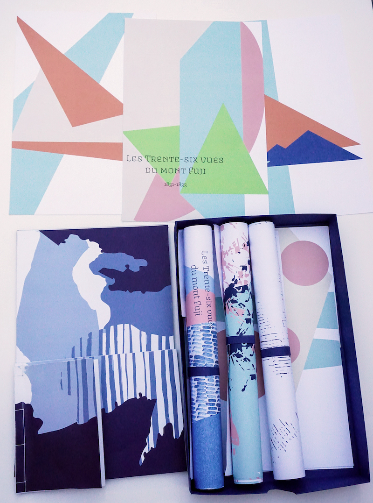
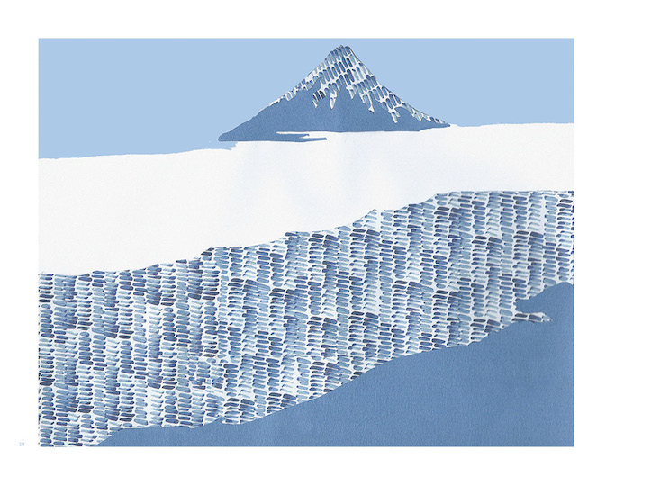
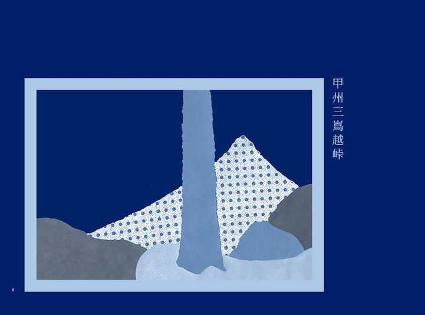

Projet autour de la série des 36 vues du mont Fuji, de l'artiste japonais Hokusai. A partir de ses estampes, j'ai souhaité recréer des compositions à ma façon. J'ai ainsi réalisé des collages paysages en y intégrant les personnages d'Hokusai.
  